8 Cómo guardar el microscopio
8.1 Introducción
Los microscopios compuestos son una pieza de ingeniería tan maravillosa como delicada. Requieren de ciertos cuidados y protocolos que, de seguirse, pueden garantizar una larga vida útil para estos ingeniosos instrumentos. Para llevar a cabo un correcto guardado del dispositivo —y la consiguiente preparación para la próxima observación—, prosiga como se describe más adelante.
8.2 Importante
Si lo que usted desea es transportar el microscopio de un lugar a otro, siga los pasos descritos en este procedimiento, con la salvedad de que deberá resguardar el instrumento en un medio apropiado para su transporte, como un maletín (Figura 8.1).

Figura 8.1: Algunos fabricantes y distribuidores tienen a la venta maletines especiales para microscopios. Asegúrese de adquierir uno compatible con el que planea transportar.
8.3 Procedimiento
Bajando de uno en uno, vaya al
objetivo 4x.Retire el
portaobjetosde laplatinaliberándolo de su sujetador.Utilice el
regulador de iluminaciónpara disminuir la cantidad de luz al mínimo.Cierre completamente los
diafragmas de apertura y de campo.Suba la
platinahasta que el tope de seguridad lo impida. Si el microscopio no cuenta con este mecanismo, súbalo hasta aproximadamente 3 cm (30 mm) delobjetivo 4x.Apague el microscopio haciendo uso de su
interruptor.Desconecte el
cable de alimentación. Primero de la toma de corriente y luego del microscopio. Enróllelo con cuidado. Si es política del lugar que el microscopio quede siempre conectado a la corriente, omita este paso.Con una brocha retire el polvo de las superficies plásticas y metálicas del microscopio, pero no de las lentes. Realice siempre la limpieza de arriba hacia abajo.
Utilizando papel especial para lentes, limpie todas y cada una de las lentes del microscopio, comenzando con los
oculares, para después bajar a losobjetivos, luego alcondensadory finalmente a lafuente de iluminación. Para realizar la limpieza realice movimientos en forma de espiral, yendo siempre de adentro hacia afuera. Si no cuenta con papel especial para lentes, puede emplear en su lugar alguna sustancia especial para lentes o una perilla para arrojar aire. Jamás utilice aire comprimido para limpiar computadoras, ya que puede contener impurezas que impacten y dañen las lentes. Tampoco sople ni utilice ropa o piezas de una tela cualquiera para realizar la limpieza.Cubra al microscopio con su
funda antipolvo.Guarde el aparato en su lugar designado, sujetándolo siempre por el
brazocon una mano y por labasecon la otra.
8.4 Diagrama de pasos
